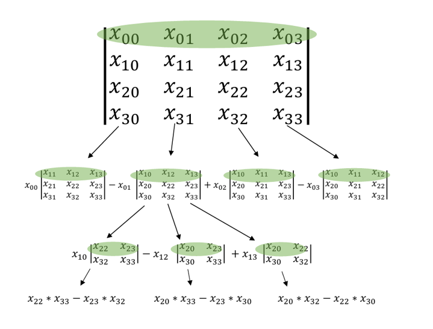

Determinant
The determinant of a matrix is a single numerical value which is used when calculating the inverse or when solving systems of linear equations. The determinant of a matrix A is denoted |A|, or sometimes det(A). The determinant is only defined for square matrices. There are several different methods for solving determinants, such as Laplace expansion:

For easier understanding of the formula, let's take a look at the following image.
